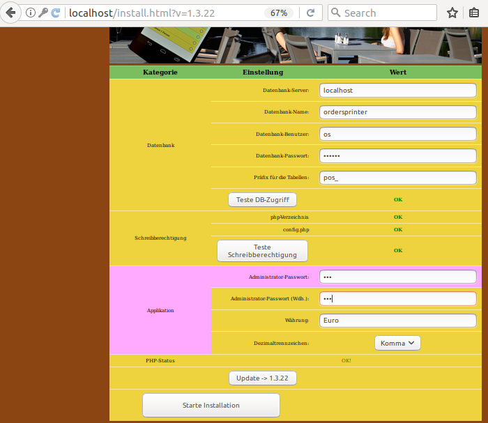
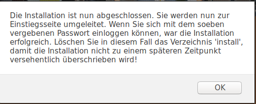
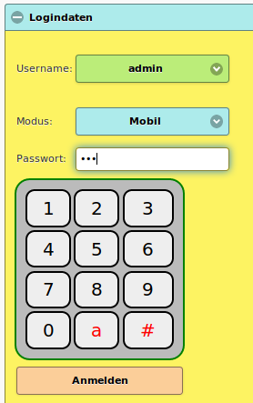
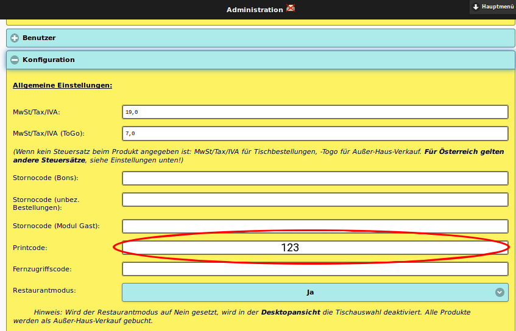
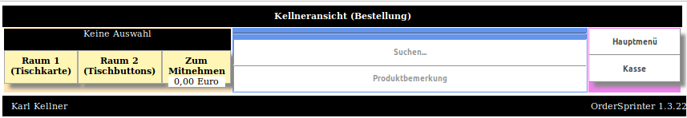
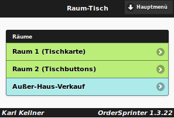

Aufsetzen eines Gastro-Kassensystems mit OrderSprinter
Achtung!
Die Verwendung dieses Howto geschieht auf eigene Gefahr. Bei Problemen mit der Anleitung melde dies bitte in der dazugehörigen Diskussion und wende dich zusätzlich an den Verfasser des Howtos.
Hinweis:
Diese Howto-Anleitung wurde zuletzt von Zauberfee am 30.07.2017 unter Ubuntu Zesty erfolgreich getestet.
Zum Verständnis dieses Artikels sind folgende Seiten hilfreich:
Dieses Howto beschreibt die Installation und Ersteinrichtung der Software OrderSprinter zum Aufbau eines Gastro-POS auf einem aktuellen Ubuntu.
Zu Beginn wird eine Einordnung in den Kontext vorgenommen: Warum sollte man ein Kassensystem unter Linux aufsetzen, welche Anforderungen gelten an Kassensysteme und welche Programme sind dem Autor bekannt, die diese Anforderungen für Deutschland umsetzen?
Anforderungen an Kassensysteme¶
Ein Kassensystem (auch als POS abgekürzt: Point-of-Sales bzw. Point-of-Service) unterstützt im Handel und der Gastronomie den Verkäufer bei der Abwicklung eines Verkaufsvorgangs.
In der Gastronomie muss ein Kassensystem besondere Anforderungen erfüllen, die weit über die Funktionalität einer reinen elektronischen Registrierkasse hinausgehen:
Bestellungen müssen auf Tische buchbar sein, die Zuweisung muss jederzeit veränderbar sein (Tischwechsel)
Bestellungen müssen gegebenenfalls zusätzlich auf konkrete Kunden oder Zimmer buchbar sein (Hotelbetrieb)
Teilabrechnungen von Bestellvorgängen (Gäste eines Tisches zahlen einzeln)
Produktvariationen (Pommes mit Ketchup und/oder Majo) mit Preisen je nach gewählten Optionen
Ausgabe von Bewirtungsbelegen
Arbeitsbons oder digitale Workflowanzeigen (Produkte müssen schließlich zubereitet werden)
Verteilung von Bons (Arbeitsbons, Kassenbons) auf Bondrucker an unterschiedlichen Locations
Gastronomische Betriebe in Europa unterliegen vielen rechtlichen Auflagen, die von Land zu Land stark variieren. Neben Hygienevorschriften und baulichen Vorgaben (Fluchtwege, Toiletten usw.) sind es vor allem die steuerrechtlichen Regelungen, deren Umsetzung mitnichten trivial ist. In Deutschland gilt die GoBD (Grundsätze zur ordnungsmäßigen Führung und Aufbewahrung von Büchern, Aufzeichnungen und Unterlagen in elektronischer Form sowie zum Datenzugriff), die aus der GdPdU (Grundsätze zum Datenzugriff und zur Prüfbarkeit digitaler Unterlagen) hervorgegangen ist.
Neben den harten Anforderungen gibt es verschiedene weiche Kriterien, die ein gutes Kassensystem ausmachen:
Skalierbarkeit: Je nach Wochentag und Uhrzeit wechselt das Gästeaufkommen. Insbesondere während der Spitzenzeiten muss ein System performant arbeiten.
mobile Bestellaufnahme: Kann eine Bestellung direkt beim Gast aufgenommen werden, bei der anschließend ein Arbeitsbon in der Küche gedruckt wird, spart das Zeit und Personalkosten.
Exportmöglichkeiten: Ein Gastronom ist verpflichtet, alle umsatzrelevanten Daten über einen Zeitraum von zehn Jahren aufzubewahren.
intuitive Benutzeroberfläche: In der Gastronomie wechseln die Bediener sehr häufig. Zeit für eine ausführliche Einarbeitung von Teilzeitkräften ist oft nicht vorhanden.
abgestuftes Rechtemanagement: GoBD und BMF-Schreiben fordern z.B. eine Dokumentation, welche Bediener Stornierungsvorgänge wann durchführen konnten.
Linux als Betriebssystem für ein Kassensystem¶
Ein Linux-System als Grundlage für ein Kassensystem bietet sich aus den oben genannten Gründen an:
Updates sind besser planbar: Kellner wollen nicht warten, wenn ein Windows 10 Kassensystem entschieden hat, nun erst einmal Updates zu installieren und vielleicht sogar neu gestartet werden möchte.
Ein Linux-System kann so aufgesetzt werden, dass nur die relevanten Komponenten installiert sind: Das macht das Gesamtsystem schneller und sicherer.
Im Gegensatz zu vielen Cloud-Diensten bleiben die sensiblen Umsatzdaten lokal beim Gastronomen.
Kosten: Da keine Lizenzkosten für ein kommerzielles Betriebssystem anfallen und auch ältere Hardware noch benutzt werden kann, fallen die TCO (Total Cost of Ownership) geringer aus.
Verfügbare Software¶
In Deutschland (nicht in Österreich, hier gilt die RKSV!) hat der Gastronom die Auswahl aus drei nicht-kommerziellen Kassensystemen, die die oben aufgeführten Anforderungen erfüllen:
OpenBravo POS: OpenBravo POS ist eine Rich-Client-Software und benötigt eine Java VM und eine Oracle-, PostgreSQL-, MySQL- oder HSQLDB-Datenbank. Die Integration mit OpenBravo ERP ist bei Betrieben von Vorteil, die alle Ressourcen (Personal, Lager, Betriebsmittel, Kapital) per Software verwalten wollen. Allerdings ist das System nicht für die Anbindung von mobilen Endgeräten konzipiert.
POSPer: POSper ist ebenso eine Rich-Client-Software und verwendet Java und Hibernate als Zwischenschicht zur Datenbank (MySql, PostGreSQL, Oracle, HSQLDB und andere). Die Oberfläche ist in viele Sprachen übersetzt worden, so dass sich der Einsatz des Programms besonders für Betriebe eignet, die ausländisches Bedienpersonal beschäftigen. POSper ist gut auf stationären großen Touchpanels bedienbar.
OrderSprinter: Die Kernkomponente ist eine Webapplikation mit PHP und einer Datenbank MySQL/MariaDB. Es werden bis zu 6 Kassenbon- und 4 Arbeitsbondrucker unterstützt, die auf Linux-Systemen mit den in der Software enthaltenen Java-Druckserver angebunden werden können. Die Bestelloberfläche ist sowohl in einer PC-geeigneten als auch mobilen Ansicht programmiert. Da es sich im Grunde um eine Webapplikation handelt, ist eine Bedienung mit handelsüblichen Smartphones möglich.
Installation¶
Dieser Artikel bezieht sich auf die Installation von OrderSprinter auf einem Ubuntu-System. Am Ende dieses HowTos steht ein Gesamtsystem bestehend aus einem OrderSprinter-Server und einem Druckerserver für einen lokal angeschlossenen Bondrucker.
Vorbereitung¶
Benötigte Hardware:
Computer mit frisch installiertem Ubuntu (wurden bereits Änderungen am System vorgenommen, ist die Installation möglicherweise anzupassen)
WLAN-Router
mobiles Endgerät (Smartphone, Tablet etc.)
USB-Bondrucker (muss das ESC/POS-Protokoll beherrschen, aber das ist i.d.R. immer der Fall bei Bondruckern)
Installation¶
Die Installation besteht aus folgenden Schritte:
Installation der richtigen Umgebung (Webserver, Datenbank, PHP mit den richtigen Extensions)
Installation der Webapplikation
Installation des Druckservers (Einbau als Service)
Installation der Umgebung¶
Beim hier vorgestellten Installationsweg soll ein LAMP-System (Linux-Apache-MariaDB-PHP) aufgesetzt werden. Alternativ zu Apache könnte man auch Nginx oder lighttpd verwenden. Als PHP-Version soll die Version 7 verwendet werden. Der OrderSprinter-Autor testet seine Software zwar mit PHP 5.6, aber PHP 7 ist neuer und schneller in der Abarbeitung. Als Datenbank kann man MariaDb den Vorzug vor MySql geben, weil der OrderSprinter-Entwickler MariaDb für seine Tests verwendet und beide Datenbanken funktionell gleichwertig sind. Je näher man die Umgebung nachbildet, in der eine Software programmiert wird, desto besser ist vermutlich die Kompatibilität gewährleistet. Zusätzlich sind einige php-Erweiterungen zu installieren, die von OrderSprinter später benötigt werden. Die Installation von Java wird für den Druckerserver benötigt:
sudo apt-get install apache2 sudo apt-get install libapache2-mod-php7.0 sudo apt-get install php7.0 php7.0-mysql sudo apt-get install mariadb-server sudo apt-get install php-gd php-curl php-zip sudo service apache2 restart sudo apt-get install openjdk-8-jre
Die Installation des Datenbank-Servers installiert den Client automatisch mit. Die Datenbank hat nun noch kein Passwort und es ist einfach möglich, als root darin zu arbeiten:
sudo mysql -u root -p
Die Eingabeaufforderung für das Passwort kann man mit Return bestätigen. Wie man anschließend sieht, kann die DB nun bedient werden. Es ist sicherlich eine gute Idee, ein Passwort zu setzen und die DB weiter abzusichern. Dieses Howto hat jedoch nicht den Schwerpunkt auf Datenbanksicherkeit, deswegen sei hierzu auf die Howtos zu MySql und MariaDB verwiesen.
OrderSprinter benötigt eine Datenbank, also soll sie nun vorbereitet werden:
CREATE DATABASE ordersprinter DEFAULT CHARACTER SET utf8 DEFAULT COLLATE utf8_general_ci;
Anschließend wird ein Benutzer definiert, der alle Rechte in der Datenbank besitzt:
GRANT ALL ON ordersprinter.* TO os@localhost IDENTIFIED BY "secret";
Auch hier kann man sich überlegen, ob nicht alle Rechte vergeben werden sollen.
Installation der Webapplikation¶
OrderSprinter lässt sich von http://www.ordersprinter.de auf der Unterseite "Download" herunterladen.
Wenn man das Downloadpaket von OrderSprinter entpackt (unzip), so sieht man mehrere Unterverzeichnisse:
webapp: die Kernkomponente
printserver: der Windows-Printserver (für eine Installation auf Ubuntu nicht interessant)
javaprinter: der Java-Printserver, der später auf dem Ubuntu-System den Bondrucker bedienen soll
scripts: Beispiel-Skripte für eine Datensicherung auf einem Memory-Stick
Hat man Apache wie oben beschrieben installiert, so liefert er standardmäßig die Dateien unter /var/www/html an anfragende Webclients aus. Da die Kernkomponente eine Webapplikation ist, muss diese nun nach html verschoben werden. Dazu wechselt man in das Verzeichnis des entpackten OrderSprinter-Downloads und kopiert die Dateien des webapp-Verzeichnisses in den Webspace:
sudo mv webapp/* /var/www/html/
Damit die Installation funktioniert, müssen während der Installation das Unterverzeichnis php und die darin enthaltene Datei config.php vom Webserver beschreibbar sein. Der Account und die Gruppe, unter der Apache standardmäßig läuft, ist www-data. Daher sollte zunächst der Eigentümer der Dateien geschrieben werden. Wird das chown-Kommando mit dem R-Flag aufgerufen, so werden die Verzeichnis rekursiv durchlaufen:
sudo chown -R www-data:www-data /var/www/html
Anschließend gibt man der Gruppe und dem Benutzer der Dateien Schreibrechte auf das Verzeichnis php und die darin enthaltene Datei config.php. Das Verzeichnis php muss dazu auch Execute-Rechte besitzen, damit das Installationsskript auf den Inhalt zugreifen kann:
sudo chmod 774 /var/www/html/php sudo chmod 664 /var/www/html/php/config.php
Die Systemumgebung ist nun eingerichtet, so dass im nächsten Schritt die Installation von OrderSprinter vorgenommen werden kann.
Ersteinrichtung¶
Die Ersteinrichtung besteht aus folgenden Schritten:
Aufruf der Installationsseite von OrderSprinter und Wahl geeigneter Startparameter
Grundlegende Konfiguration, so dass der Druckerservice die Jobs beim OrderSprinter abholen kann.
Beispielspeisekarte, Raumplan, Benutzer
Installation der Webapplikation¶
Öffnet man den Webbrowser (z.B. Firefox, denn damit testet auch der OrderSprinter-Autor) und ruft die URL http://localhost auf, sollte man die Installationsseite sehen. Erscheint stattdessen die Ubuntu-Informationsseite, wird Inhalt aus dem Cache dargestellt. In diesem Fall hilft ein Reload der Webseite.
Im ersten Schritt muss man sich für die Sprache entscheiden. Zur Auswahl stehen Deutsch, Englisch und Spanisch. Die gewählte Sprache wird nicht nur für die Installation verwendet, sondern auch den Beispielbenutzern automatisch zugewiesen (kann aber später geändert werden).
Anschließend wird die Zeitzone abgefragt. Die Zeitzone ist wichtig, damit die Zeitangaben auf den Kassenbons später korrekt sind.
Danach erreicht man die wichtigste Einstellungsseite:

Im Bereich Datenbank sind die Einstellungen für Datenbank-Name, -Benutzer und -Passwort vorzunehmen, die im vorangegangenen Abschnitt beim Anlegen der Datenbank festgelegt wurden (ordersprinter, os, secret). Ein Tabellenpräfix kann frei gewählt werden. Das Präfix ist nur dann interessant, wenn mehrere Applikationen die gleiche Datenbank verwenden sollen. Das ist für die Installation in kommerziellen Webpaketen interessant. In einem selbst verwalteten Ubuntu-System kann man sich beliebig viele Datenbanken anlegen, so dass die Einstellung hier irrelevant ist.
Drückt man nun den Button Teste DB-Zugriff, sollte eine mögliche Fehlermeldung durch ein OK ersetzt werden.
Wurden die Schreibrechte richtig gesetzt, so wird auch dies angezeigt.
Fehlen php-Erweiterungen, so würden die fehlenden Erweiterungen hier angezeigt.
Bevor die Installation startet, muss man ein Administrator-Passwort festlegen.
Die Installation startet, wenn man den Button Starte Installation anklickt. Dabei werden die Tabellen in der Datenbank angelegt, gewisse Voreinstellungen vorgenommen und die Konfigurationsdatei config.php, die die Zugangsparameter für die Datenbank enthält, beschrieben. Dieser Vorgang kann einige Sekunden in Anspruch nehmen.
Anschließend muss man sich für einen Arbeitsablauf entscheiden:
Digital: Verzicht auf Arbeitsbons. Bestellungen werden in einer Küchen- und Baransicht aufgeführt.
Arbeitsbons: Bestellungen werden auf Arbeitsbons ausgedruckt (klassischer Ablauf in Gastronomiebetrieben)
Arbeitsbons und Digital: Der Kellner kann sich bei der Bestellaufnahme entscheiden, welchen Arbeitsablauf er für die jeweilige Bestellung wünscht.
Hat man noch keine Erfahrung mit der Software gemacht, bietet sich die letzte Einstellung an, da man alle Optionen austesten kann.
In einem abschließenden Schritt kann wählen, ob neben einem obligatorisch angelegten Admin-Benutzer weitere Benutzer, eine Beispielspeisekarte und ein Musterraumplan angelegt werden sollen. Auch hier sollte man zum Einstieg die letzte Option wählen, denn Löschen und Überschreiben von Einstellungen sind jederzeit möglich.
Hat man sich entschieden, neben dem Admin weitere Benutzer anzulegen, bekommen diese Benutzer ebenso das im vorangegangenen Schritt eingegebene Passwort zugewiesen.
Die Installation ist abgeschlossen, wenn folgende Meldung erscheint:

Bestätigt man diese Meldung, so wird man zur Anmelde-Seite weitergeleitet.
In einem produktiven System sollte man das Unterverzeichnis install löschen.
Grundlegende Konfiguration¶
In der Grundkonfiguration müssen Basisdaten festgelegt werden, damit der Druckserver z.B. später die Druckjobs abrufen darf. Dazu wählt man den admin als Benutzer aus, gibt das während der Installation gewählte Passwort ein und drückt beherzt auf den Anmelden-Button:

Die erste Seite zeigt beim Erstmaligen Anmelden eines Benutzers stets die persönlichen Einstellungen an, so dass man hier die Möglichkeit hat, die Sprache gegebenenfalls zu ändern. Als Admin wählt man über das Hauptmenü nun die Ansicht Verwaltung aus.
Dort befinden sich viele aufklappbare Bereiche. Im Panel Konfiguration muss nun ein Printcode zugewiesen werden. Dieser dient später dazu, dass sich der Druckservice mit der Webapplikation über eine REST-Schnittstelle die Printjobs abholen darf. Als Beispiel sei hier der Printcode 123 eingegeben. Am Ende des Panels befindet sich ein Ändern-Button, nach dessen Anklicken die Einstellung übernommen wird.

Im Konfigurationsbereich können noch viele andere Einstellungen vorgenommen werden, die meisten sind jedoch erst für den produktiven Betrieb relevant (z.B. Betriebsinformation für den Kassenbon).
Neben den während der Installation angelegten Beispielbenutzern können im aufklappbaren Bereich Benutzer weitere Benutzer angelegt werden. Beim Anlegen kann man festlegen, welche Rechte der Benutzer haben soll. In den benutzerspezifischen Einstellungen kann jeder Benutzer das ihm zugewiesene Passwort ändern sowie weitere Präferenzen einstellen.
Im Bereich Datenbank kann man den Beispiel Raumplan überschreiben und ein oder mehrere Räume mit Tischen anlegen. Wird nur ein Raum angelegt, so wird später bei der Bestellaufnahme und in der Kassenansicht die Raumauswahl übersprungen.
Druckerserver¶
Der Javaprintserver ist speziell für den Einsatz auf einem Linux-System programmiert worden. Wenn man den OrderSprinter-Download entpackt, befindet er sich im Unterverzeichnis javaprinter. Der Programmautor empfiehlt, den javaprinter in ein Systemverzeichnis zu kopieren und entweder unter Root-Rechten zu starten oder mit einem Account, dem man Berechtigungen für einen Schreibzugriff auf den USB-Port gegeben hat:
sudo cp -Ra javaprinter/* /usr/local/bin
Im nächsten Schritt sollte die VendorID und ProductID des Bondruckers ermittelt werden. Da möglicherweise viele weitere Geräte am USB-Port hängen, kann man sich die Arbeit erleichtern, wenn man das lsusb-Kommando vor und nach dem Anstecken des Druckers ausführt und die Differenz der Ausgaben betrachtet:
sudo lsusb -v > /tmp/ohne-drucker.txt # nun schließt man den Drucker an und schaltet ihn ein sudo lsusb -v > /tmp/mit-drucker.txt diff /tmp/ohne-drucker.txt /tmp/mit-drucker.txt rm /tmp/*-drucker.txt
Die Werte für VendorID und ProductID sollte man sich notieren.
Damit der Druckserver eine Verbindung zum Drucker aufnehmen kann, muss die Konfigurationsdatei in /usr/local/bin/config.json bearbeitet werden.
printersize: Für einen 58mm-Drucker ist ein Wert von 32, für einen 80mm-Drucker von 40 optimal. Der Wert stellt die Anzahl der Zeichen pro Zeile dar und kann von Drucker zu Drucker leicht variieren.
printcode: Hier ist der Printcode einzugeben, der zuvor in der Konfiguration festgelegt wurde (im angegebenen Beispiel war es
123).
Die restlichen Eingaben sollen zunächst ignoriert werden. Damit sieht die Datei für einen 58mm-Drucker beispielsweise so aus:
{
"instance" : 1,
"vendorid" : "4348",
"productid" : "5584",
"printersize" : 32,
"printcode" : "123",
"baseurl":"http://localhost",
"baseusername" : "",
"basepass" : "",
"escinits" : [ 27, 64, 27, 116, 0 ],
"escposts" : [ 29, 86, 66, 10, 27, 64],
"useeveryprintdevice" : 1,
"verbose_closing_summary" : 1,
"smallformat" : 0,
"logoscale" : 1.0
}Ein erster Test lässt sich so durchführen:
sudo java -jar /usr/local/bin/javaprinter.jar /usr/local/bin/config.json
Wenn der Druckerserver sich mit der OrderSprinter-Webapplikation verbinden kann, sieht man folgende Ausgabe:
fee@feeserver:~$ sudo java -jar /usr/local/bin/javaprinter.jar /usr/local/bin/config.json Read: /usr/local/bin/config.json Instance: 1 Config: Config [printersize=32, vendorid=4348, productid=5584, currency=Euro, decpoint=,, companyinfo=Musterrestaurant Beispielstrasse 123 12345 Musterort, escinits=[27, 64, 27, 116, 0], escposts=[29, 86, 66, 10, 27, 64], printcode=123, baseurl=http://localhost, baseusername=, basepass=, verbose_closing_summary=1] Scaled from 640 to width: 384 by scale 0.6
Nun ist es an der Zeit, den ersten Druckjob zu generieren. In der Weboberfläche kann man sich als normaler Benutzer einloggen (ein Admin hat in der Standardeinstellung keinen Zugriff auf die Bestellansicht), ein Produkt in der Bestellansicht auswählen und auf den Button Arbeitsbon klicken.
Möglicherweise sieht man in der Ausgabe des Druckerservers nun eine Fehlermeldung, die sich über einen nicht gefundenen Drucker beschwert:
Print Work Job: 1 Cannot find a receipt printer - cannot print
In diesem Fall hat sich der Drucker am USB-Port nicht als Drucker angemeldet. Zu diesem Zweck wurde die VendorId und ProductID vorher ermittelt. Die Werte müssen dann in die config.json eingetragen werden und zusätzlich der Parameter useeveryprintdevice auf 0 gesetzt werden.
Startet man den Druckerserver erneut, sollte die Fehlermeldung verschwinden und ein Arbeitsbon gedruckt werden.
Nun soll der Druckerserver jedoch bei jedem Systemstart automatisch starten. Ubuntu nutzt in 17.04 systemd. Dazu muss der javaprinter als Service konfiguriert werden.
Im ersten Schritt legt man eine Datei /usr/local/bin/javaprinter.bat mit folgendem Inhalt an:
#!/bin/sh /usr/bin/java -jar /usr/local/bin/javaprinter.jar /usr/local/bin/config.json &
Die Datei muss ausführbar sein:
chmod +x javaprinter
Nun muss man eine Service-Beschreibung erstellen. Dazu wird eine Datei /etc/systemd/system/javaprinter.service mit folgendem Inhalt angelegt:
[Unit] Description=OrderSprinter-Javaprinter [Service] Type=forking ExecStart=/usr/local/bin/javaprinter.bat [Install] WantedBy=multi-user.target
Nachdem der Service beschrieben wurde, muss er aktiviert und gestartet werden:
sudo systemctl enable javaprinter.service sudo systemctl start javaprinter
Hiermit ist die Installation eines Grundsystems abgeschlossen. Wer mehr aus der Software herausholen möchte, sei auf die Dokumentation auf der Homepage des Programms verwiesen.
Test¶
Die Installation ist abgeschlossen. Meldet man sich mit der Option Desktop auf dem PC an, so sollte die Kellneransicht wie folgt aussehen:

Ein wichtiger Test ist auch der Zugriff über ein Smartphone auf die Weboberfläche. Meldet man sich als Kellner an, wählt aber die Option Mobil, so sieht man eine für Mobilgeräte optimierte Webseite. Im Fall einer Installation mit Musterdaten sieht die Seite so aus:

Problembehebung¶
Dieses Howto sollte die Installation von OrderSprinter auf einem frischen Standard 17.04-Ubuntu beschreiben. Ist das System jedoch nicht frisch aufgesetzt worden, oder soll OrderSprinter auf einer anderen Ubuntu-Version installiert werden, mögen die Annahmen über die Umgebung nicht zutreffen. In diesem Fall sollen hier einige Hilfestellungen gegeben werden.
Bei Änderungen, die den Webserver oder die PHP-Konfiguration betreffen, muss im Anschluss der Webserver neu gestartet werden, damit die Änderungen wirksam werden (sudo apache2ctl restart).
Nicht vorhandenene PHP-Erweiterungen¶
Um alle Funktionen der Software nutzen zu können, muss PHP mit folgenden Extensions installiert sein:
gd
mysqli
openssl
pdo_mysql
PDO
session
zlib
curl
zip
ftp
Eine Installation kann auch ohne alle diese Erweiterungen durchgeführt werden, jedoch können viele Funktionen dann zu Fehlern führen. Über den Aufruf http://localhost/install/phpinfo.php kann man sich die PHP-Konfiguration ausgeben lassen, wenn man das Install-Verzeichnis noch nicht gelöscht hat.
Überschreitung des Zeitlimits auf langsamen Servern¶
In der Datei php.ini (deren Speicherort man ebenso über einen Aufruf von http://localhost/install/phpinfo.php ermitteln kann, sind gewisse Vorgaben für die maximal erlaubte Ausführungszeit eines PHP-Skripts enthalten, die für die meisten Systemen passen. Ist der Rechner jedoch sehr langsam, ist eine Erhöhung der max_execution_time ratsam.
Zuweisung des Memory-Limits¶
Wenn nach ausgiebigem Test bestimmte Funktionen nicht mehr funktionieren (Backup, Restore, PDF-Reports), kann es sein, dass die Datenmenge so groß geworden ist, dass der für PHP zugewiesene Speicher nicht ausreicht. In diesem Fall sollte der Wert memory_limit in der php.ini vergrößert werden.
Upload von Dateien funktioniert nicht¶
In der php.ini lässt sich einstellen, wie groß die maximale Größe einer hochladbaren Datei sein darf. Die zu ändernde Variable lautet max_post_size.
Links¶
http://www.ordersprinter.de
 - OrderSprinter-Homepage
- OrderSprinter-Homepagehttps://de.wikibooks.org/wiki/POSper_Handbuch
- POSper-Handbuchhttp://www.openbravo.com
 - Offizielle Seite von OpenBravo POS und OpenBravo ERP
- Offizielle Seite von OpenBravo POS und OpenBravo ERP
- Erstellt mit Inyoka
-
 2004 – 2017 ubuntuusers.de • Einige Rechte vorbehalten
2004 – 2017 ubuntuusers.de • Einige Rechte vorbehalten
Lizenz • Kontakt • Datenschutz • Impressum • Serverstatus -
Serverhousing gespendet von